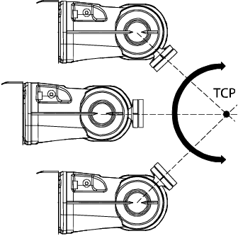

| 编程和测试 - 工具 | ||
| 什么是工具中心点？ | ||
| 图示 | 以下是围绕工具中心点 (TCP)定义工具／操纵器机械腕方向的示意图.  |
| 描述 | 工具中心点 (TCP) 是定义所有机器人定位的参照点。通常 TCP 定义为与操纵器转动盘上的位置相对. TCP 可以微调或移动到预设目标位置。工具中心点也是工具坐标系的原点. 机器人系统可处理若干 TCP 定义，但每次只能存在一个有效 TCP. TCP 有两种基本类型：移动或静止. 移动TCP 多数应用中TCP 都是移动的，即TCP 会随操纵器在空间移动. 典型的移动 TCP 可参照弧焊枪的顶端、点焊的中心或是手锥的末端等位置定义. 静止TCP 某些应用程序中使用固定 TCP，例如使用固定的点焊枪时。 此时，TCP 要参照静止设备而不是移动的操纵器来定义. |